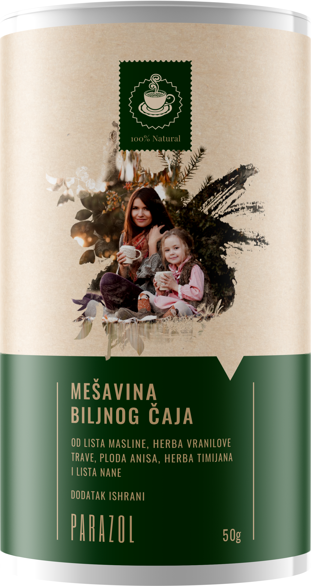

Într-o marți dimineața am ajuns într-un sat de lângă Strehaia, în Mehedinți. Drumul intră pe uliță de pământ, printre case vechi cu grădini și câini care latră la poartă. Aurica ne-a întâmpinat la poartă, cu șorțul încă legat la brâu — tocmai scosese pâinea.
Aurica are 63 de ani. Toată viața a stat în satul ăsta — grădină, animale, piață sâmbăta. N-a fost niciodată o femeie bolnăvicioasă. Dar ultimii șase ani, cum spune ea, „se stingea încet" și nimeni nu știa de ce.
Motivul? Ani la rând a tratat lucrul greșit. Doctorii i-au spus că are gastrită. Apoi alergie. Apoi „oboseală cronică". Apoi „nervi". Fiecare specialist trata simptomul lui — și niciunul nu căuta ce le provoca pe toate. Dădea bani pe gastroenterolog, pe dermatolog, pe analize, pe cutii întregi de pastile. Iar trupul slăbea mai departe.
„I-am văzut în trupurile celor care nici măcar nu bănuiau că îi poartă" Discuție exclusivă cu dr. Sorin Vlăsceanu — medic anatomopatolog cu 35 de ani de experiență, omul care a făcut peste 9.000 de autopsii

Dr. Sorin Vlăsceanu: „Treizeci și cinci de ani am lucrat ca anatomopatolog. Am deschis trupuri de oameni de toate vârstele — și ce am văzut iar și iar publicul nu știe, fiindcă se trece sub tăcere. Paraziți. Nu la oameni rari, nu la „murdari" — la oameni obișnuiți. Gospodine, pensionari, muncitori. Oameni care în viață s-au crezut perfect sănătoși.
Vă spun simplu, fără latinească. Când tai un intestin, el trebuie să aibă o anumită culoare — viu, roz, curat. Iar la mulți dintre cei de pe masa mea peretele intestinului era acoperit cu o peliculă cenușie și groasă, ca și cum ar fi fost uns pe dinăuntru cu ceară.
MUREAU DE INFARCT, DE ACCIDENT VASCULAR, DE CEEA CE NUMEAU «CANCER CU ORIGINE NECUNOSCUTĂ» — IAR CAUZA ADEVĂRATĂ N-A CĂUTAT-O NIMENI. FIINDCĂ NIMĂNUI NU I-A TRECUT PRIN CAP SĂ SE UITE ACOLO."
Dr. Vlăsceanu vorbește calm, fără dramatism — ca un om care a văzut de prea multe ori sfârșitul poveștii. S-a pensionat acum câțiva ani, dar ce a învățat pe masa din sala de autopsie, spune el, „mă urmărește de fiecare dată când văd pe cineva slăbind fără explicație".
„Cei mai mulți cred că paraziții sunt ceva din trecut, din sărăcie, din alte țări. E o închipuire care omoară. Paraziții sunt peste tot în jurul nostru — în carnea nefăcută destul, în legumele nespălate din propria grădină, în apa de fântână, pe blana câinelui care doarme în casă. Iar când ajung înăuntru, nu strigă. Lucrează încet. Și omul crede că are gastrită, alergie sau „pur și simplu oboseală".“
„Pastilele de la farmacie nu rezolvă problema — lovesc o specie și lasă zeci" De ce tratamentul obișnuit împotriva paraziților dă greș aproape întotdeauna — și de ce distruge ficatul
Dr. Sorin Vlăsceanu:
— Sincer: ce mă îngrijorează cel mai tare e câți oameni cred că e destul să înghită o pastilă de la farmacie și gata. Asta e o închipuire periculoasă. Există zeci de specii de paraziți care trăiesc în trupul omului — unii în intestine, alții în ficat, alții în căile biliare, alții în mușchi. O pastilă de farmacie lovește cel mult una sau două specii. Restul rămân și își văd de treabă mai departe.
Ăsta e cercul vicios: omul ia o pastilă, se simte puțin mai bine câteva săptămâni, apoi simptomele se întorc — oboseală, balonare, probleme de piele — și el își zice că «nu sunt paraziți, fiindcă am luat medicament». Iar de fapt sunt. Și pe deasupra, chimia tare din pastilele astea lovește ficatul și rinichii, exact organele care sunt deja încărcate cu lupta împotriva paraziților.

„Analizele ei erau curate. Și tocmai asta i-a păcălit pe toți" De ce analizele obișnuite tac — și de ce un rezultat curat nu înseamnă că înăuntru nu e nimic
Dr. Sorin Vlăsceanu:
— Întrebarea asta mi se pune cel mai des: „Domnule doctor, dar eu îmi fac analize în fiecare an și totul e bine." Vă explic de ce asta nu înseamnă nimic.
O hemoleucogramă obișnuită nu arată paraziți. Și nu fiindcă laboratorul e slab — ci fiindcă în sânge nu sunt. Ei stau în peretele intestinului. Sângele poate arăta doar umbra lor: o hemoglobină ușor scăzută, pe care ani de zile o pui pe seama altor lucruri.
Iar examenul coproparazitologic — singurul care chiar i-ar putea prinde — minte dacă îl faci o singură dată. Parazitul nu elimină ouă în fiecare zi, ci în cicluri. Dacă proba e luată într-o zi „goală", rezultatul iese curat.
Auricăi, în șase ani de umblat pe la doctori, nu i-a recomandat nimeni un astfel de examen. Nici unul. Exact ca celor care ajungeau după aceea la mine pe masă — cu un dosar de analize în care scria „în limite normale".
UN REZULTAT CURAT NU ÎNSEAMNĂ CĂ ÎNĂUNTRU NU E NIMIC. ÎNSEAMNĂ DOAR CĂ NU S-A CĂUTAT UNDE TREBUIE — SAU CĂ S-A CĂUTAT ÎN ZIUA GREȘITĂ.
De asta milioane de oameni trăiesc ani la rând cu rezultate „bune" și cu un trup care slăbește tot mai mult. Hârtia tace, iar cauza își vede de treabă.
Oboseala cronică, balonarea, problemele de piele, „alergiile" și „nervii" după 40 de ani nu sunt întotdeauna „de la ani" — de multe ori sunt semnul că trupul poartă paraziți care îl storc din interior.
Pastilele pentru „gastrită" și „alergie" doar acoperă simptomele, în timp ce cauza adevărată continuă să se înmulțească în liniște. Fără o curățare completă a organismului, trupul slăbește an după an — iar paraziții se răspândesc în ficat, în căile biliare și în mușchi.
Dr. Sorin Vlăsceanu:
— Vă rog, înțelegeți cât e de serios. În cariera mea am văzut ce fac paraziții cu trupul în ani de zile. Oamenii umblă pe la doctori pentru „nervi", „alergie", „gastrită", „migrenă" — și nimeni nu face lucrul corect și nu se uită încotro trebuie. PASTILELE OBIȘNUITE DE LA FARMACIE NU CURĂȚĂ TRUPUL COMPLET — LOVESC O SPECIE ȘI LE LASĂ PE CELELALTE SĂ DISTRUGĂ MAI DEPARTE DIN INTERIOR!
Și ce mă atinge cel mai tare: oamenii ăștia n-au știut. Au crezut că sunt sănătoși. Vinovați erau anii, munca, stresul. Iar în tot timpul ăsta purtau ceva viu, care îi otrăvea din interior — și nimeni nu le-a spus să verifice.

E important de subliniat: în cele mai multe cazuri, chiar și cu pastile de farmacie luate din când în când, problema se întoarce, fiindcă adevărata cauză — mai multe specii de paraziți care trăiesc în locuri diferite din corp — rămâne nerezolvată.
După ani de purtat paraziți, mulți oameni pierd nu doar energia, ci și sănătatea ficatului, a fierii și a intestinelor. Intoxicația cronică, imunitatea slăbită, inflamațiile permanente — ăsta e prețul faptului că nimeni n-a căutat cauza adevărată.
Cazuri care mi-au schimbat privirea — și care vă vor schimba felul în care vă priviți propria sănătate
Dr. Sorin Vlăsceanu:
— Lăsați-mă să vă spun ce vedeam an după an. Nu cifre. Nu statistici. Oameni. Oameni cu nume, care până în ultima zi au crezut că problema lor e cu totul altceva.


Iată semnele care se pun cel mai des pe seama „anilor", a „stresului" sau a „alimentației proaste" — și care de multe ori sunt semnul unor paraziți în corp:
- Oboseală permanentă și lipsă de vlagă — dormiți 8 ore și vă treziți ca bătut;
- Balonare, gaze, greutate în stomac după masă — „parcă fierbe ceva în intestine";
- Constipație și diaree care alternează fără motiv clar;
- Probleme de piele — erupții, mâncărimi, eczemă, „alergii" care vin și pleacă de nicăieri;
- Poftă de nestăpânit de dulce și de făinos — paraziții se hrănesc cu zahăr;
- Scrâșnit din dinți în somn, somn agitat, trezire pe la 3 dimineața;
- Anemie și lipsă de fier care nu se îndreaptă nici cu pastile;
- Cearcăne, piele palidă, păr și unghii fragile;
- Mâncărime în zona anală, mai ales noaptea;
- Irascibilitate, „nervi", ceață în cap, concentrare slabă;
- Răceli și infecții dese — imunitate slăbită, fiindcă trupul își consumă puterile pe paraziți;
Fiecare dintre semnele astea se pune ușor pe seama altui lucru. Și tocmai de asta paraziții rămân nedescoperiți ani la rând. Ignorarea lor duce la un singur rezultat: INTOXICAȚIE CRONICĂ A ORGANISMULUI, IMUNITATE SLĂBITĂ, FICAT ȘI INTESTINE AFECTATE — ȘI UN TRUP CARE AN DUPĂ AN LUCREAZĂ TOT MAI GREU.
Fiecare zi cu paraziți în corp e încă o zi de intoxicație a organismului! Mii de oameni tratează ani la rând lucrul greșit — „gastrită", „alergie", „nervi" — în timp ce cauza adevărată îi stoarce nestingherită din interior. Faceți ceva acum — pentru dumneavoastră — până nu devine serios!
Dr. Sorin Vlăsceanu:
— Eu toată viața m-am uitat la urmări. Dar nu eu am găsit soluția — a găsit-o o veterinară de țară, dr. Lenuța Oprea, care zeci de ani a curățat animalele de paraziți. Când i-am auzit povestea, am înțeles că femeia asta știe ceva ce noi, medicii, am uitat.
„Am înțeles că trebuie să existe un fel de a curăța trupul blând — nu de a-l otrăvi cu chimie tare" Cum a lucrat ani de zile o veterinară de țară la o formulă din plante care curăță organismul complet
Dr. Lenuța Oprea, medic veterinar cu peste 30 de ani de experiență:
— Toată viața mea de muncă tratez animale. Și uite ce știe orice om de la țară, dar rar se gândește: câinele și pisica îi deparazităm obligatoriu de două ori pe an. Animalele din gospodărie — vaci, oi, porci — după calendar, regulat. Caii din grajd — la fel. Fiindcă, dacă n-o faci, animalul slăbește, se pipernicește și în cele din urmă moare. Asta e știință de bază la sat.
Și atunci, într-o zi, m-am gândit: pe animale le curățăm regulat — iar pe noi niciodată. Omul care trăiește cu animalele astea, mănâncă aceeași carne, sapă în același pământ, bea din aceeași fântână — nu se curăță niciodată în viața lui. Un paradox: animalul e mai bine apărat decât stăpânul lui.
Ani la rând am făcut pentru animale un amestec de plante care alungă paraziții. Trebuia să fie din plante și blând — chimie tare nu îndrăzneam să folosesc, fiindcă laptele și carnea animalelor ajung pe masa oamenilor. Și am observat ceva: animalele curățate cu amestecul ăsta își reveneau altfel decât cele tratate cu chimie.
Formula din plante a dr. Lenuța Oprea conține următoarele ingrediente:
- Pelin (Artemisia absinthium) Cel mai cunoscut leac din plante pentru alungarea paraziților din intestine
- Vetrice (Tanacetum vulgare) Acționează puternic împotriva paraziților intestinali și a ouălor lor
- Cuișoare (eugenol) Descompun ouăle și larvele paraziților — exact ce nu ating celelalte plante
- Nuc negru (Juglans nigra) Extract din coajă: curăță intestinele și ajută la eliminarea paraziților
- Semințe de dovleac (Cucurbita) Acționează blând asupra paraziților și calmează mucoasa intestinală
Plantele astea se potrivesc greu în proporția corectă. Dacă amestecul nu e exact, ceaiul lovește o singură specie — exact ca pastila de farmacie — iar restul rămân. Secretul e că acționează pe mai multe specii deodată: și pe adulți, și pe ouă, și pe larve.
Așa s-a născut Parazol — ceai din plante care curăță organismul de paraziți complet și blând, fără chimie tare
Dr. Lenuța Oprea:
— Amestecul pe care îl făceam pentru animale l-am adaptat pentru om — plantele exacte, proporția exactă, forma de ceai, care e firească pentru trup. Se numește Parazol. Se prepară ca un ceai obișnuit: o linguriță se opărește cu apă fierbinte, dimineața și seara. Cura ține de obicei 3-4 săptămâni.

Puterea stă în faptul că ceaiul lucrează treptat și complet: întâi asupra paraziților adulți, apoi asupra ouălor și larvelor lor, după care ajută trupul să elimine totul afară, iar intestinele și ficatul să se refacă. Pastila de farmacie lovește o dată și lasă restul.
„Parazol" este unic. Fiecare plantă — în proporția exactă — lovește paraziții în faze diferite: adulți, ouă, larve. De asta curăță complet, nu parțial. Și cel mai important: lucrează blând, fără să atace ficatul și rinichii.
Aurica:
— Veterinara mi-a dat un pliculeț și mi-a zis: «Încearcă, Aurico, ce ai de pierdut?» Beam ceaiul dimineața și seara. A treia-a patra zi am simțit că stomacul mi-e mai ușor decât de ani de zile. Nu credeam că e de la ceai. Îmi ziceam — o fi întâmplare.
4 pași prin care Parazol curăță organismul de paraziți — la orice vârstă
Cele 4 acțiuni principale ale ceaiului „Parazol":
- Alungarea paraziților adulți: Încă din primele zile de cură, pelinul și vetricea acționează asupra paraziților adulți din intestine — îi slăbesc și ajută trupul să-i elimine pe cale naturală. Nu o singură specie, ca pastila de farmacie, ci mai multe deodată.
- Distrugerea ouălor și a larvelor: Cuișoarele (eugenolul) descompun ouăle și larvele paraziților — exact ce nu ating celelalte plante. Pasul ăsta e cheia: fără el, paraziții se întorc din ouăle rămase. De asta ceaiul curăță complet, nu parțial.
- Detoxifierea de deșeuri: În timp ce paraziții pleacă, trupul se curăță de deșeurile pe care aceștia le-au eliminat ani de zile în sânge. Nucul negru și semințele de dovleac ajută ficatul și intestinele să scoată afară toxinele adunate — se duc oboseala și ceața din cap.
- Refacerea intestinelor și a imunității: După curățare, amestecul de plante calmează mucoasa intestinală și ajută trupul să-și refacă puterile. Energia se întoarce, pielea se liniștește, digestia se normalizează, iar imunitatea — care ani de zile s-a consumat degeaba — începe iar să lucreze pentru dumneavoastră.
„Întâi Parazol l-au băut oameni obișnuiți cu suferințe «fără rezolvare» — rezultatele m-au surprins și pe mine" Observație pe 2340 de persoane, cu vârste între 45 și 86 de ani
Dr. Sorin Vlăsceanu:
— Când, după zeci de ani de autopsii, am auzit pentru prima dată de amestecul ăsta din plante, am fost sceptic — ca orice medic. Dar rezultatele pe care le arătau oamenii care îl beau erau atât de clare încât n-am putut să le ignor.
Am văzut oameni care ani de zile se tratau de „gastrită" și „alergie" — cum în câteva săptămâni le revine energia, li se liniștește pielea, li se normalizează digestia. Ce nu rezolvase nicio pastilă în ani de zile.
Rezultatele observației „Parazol" — grup de control: 2340 de persoane, 45-86 de ani
| Dispariția balonării și a greutății în stomac | 96,2% |
| Revenirea energiei, dispariția oboselii cronice | 94,7% |
| Liniștirea pielii (erupții, mâncărimi, „alergii") | 98,1% |
| Normalizarea digestiei și a tranzitului | 87,3% |
| Dispariția poftei de dulce | 91,5% |
| Somn mai bun, oprirea scrâșnitului din dinți | 89,4% |
| Îmbunătățirea hemoleucogramei (fier) | 93,8% |
| Dispariția ceții din cap, concentrare mai bună | 95,6% |
| Dispariția cearcănelor | 97,0% |
| Întărirea imunității, infecții mai rare | 94,3% |
Cazul care arată cel mai bine cât de mult rămân paraziții ascunși Aurica, 63 de ani. Șase ani tratată de „gastrită", „alergie" și „oboseală cronică". După o cură cu ceai Parazol — pentru prima dată în ani de zile s-a trezit odihnită, iar pielea i s-a liniștit.
Aurica a fost una dintre primele cărora dr. Lenuța le-a dat ceaiul. La 63 de ani, după șase ani de umblat pe la doctori, cu analize bune și cu un trup care slăbea pe zi ce trece. Fata ei e la Viena, băiatul în Germania — sunau duminica și atât.

„Șase ani m-am târât de la un doctor la altul. Mereu obosită, umflată, pielea îmi ardea și mă mânca, îmi cădea părul. Îmi ziceau: gastrită, alergie, nervi, anii. Beam tot ce-mi dădeau. Nimic nu ajuta, iar eu mă simțeam ca stoarsă.
Cel mai rău era că toate analizele ieșeau «bune». Atunci de ce eram așa secătuită? Începusem să cred că-mi închipui, că am devenit ipohondră. Nimeni, niciun doctor, n-a pomenit de paraziți.
Atunci a venit veterinara pentru vacă. Și, așa, în treacăt, s-a uitat la mine și m-a întrebat: «Aurico, dar tu când te-ai curățat ultima dată pe tine? Câinele îl cureți de două ori pe an, iar pe tine niciodată.» Mi-a dat ceaiul ei. A treia zi stomacul îmi era mai ușor.
Am plâns. Nu fiindcă îmi era mai bine. Ci fiindcă am înțeles câți ani și câți bani am pierdut tratând lucrul greșit — când răspunsul era atât de simplu."
Aurica, 63 de ani, sat din MehedințiAlt caz: Costel, 61 de ani, toată viața șofer de camion, ani de zile tratat de „gastrită" care nu trecea cu nicio pastilă.

„Cinci ani m-au tratat de gastrită. Greutate în stomac după fiecare masă, greață, balonare ca o tobă. M-au filmat, mi-au dat pastile de stomac. Nimic. Slăbeam, deși mâncam normal.
Nevastă-mea a auzit de ceaiul Parazol de la o vecină. A zis: încearcă, ce ai de pierdut. Am început să-l beau dimineața și seara. După vreo zece zile — prima dată în ani de zile am mâncat și pe urmă nu m-a durut și nu m-a umflat. După o lună mă simțeam om nou.
Ce m-a enervat cel mai tare: cinci ani și o groază de bani aruncați pe un diagnostic greșit. Erau paraziți. Și nimeni nu s-a gândit să se uite. Dacă nu era ceaiul ăsta, cine știe până când mă chinuiam."
„Parazol nu acoperă simptomele — curăță cauza din trup" De asta nu profită doar cazurile grele. Oricine peste 40 de ani care simte primele semne poate preveni ani de chin degeaba.
Dr. Sorin Vlăsceanu:
— Cura ține de obicei 3-4 săptămâni, iar la cei care poartă problema de ani de zile poate și mai mult. O cură e de ajuns ca trupul să se curețe — nu e ceva ce se bea permanent. Cum mi-a explicat dr. Oprea, unii o repetă o dată pe an, exact cum se face la animale.
Parazol lucrează treptat: în primele zile se duce balonarea și greutatea din stomac, apoi se întoarce energia, se liniștește pielea, se normalizează digestia. Am văzut oameni care ani de zile tratau suferințe „fără rezolvare" — cum în câteva săptămâni le revine puterea, cum pentru prima dată de mult dorm ca oamenii. Trupul știe singur cum să se refacă, de îndată ce îi iei povara care îl storcea.
Datorită formulei din plante a dr. Lenuța Oprea, mii de oameni din România și-au curățat organismul de paraziți. Iată câteva cazuri:


Dr. Sorin Vlăsceanu:
— Toată viața mea de muncă m-am uitat la urmările a ceea ce fac paraziții cu trupul în ani de zile. De asta cazurile astea mă ating: de îndată ce povara asta e luată de pe trup, el se reface singur. Fără chimie tare. Fără pastile care distrug stomacul. Trupul omului e puternic — trebuie doar să i se ia la timp ceea ce îl stoarce din interior.
De ce nu se găsește Parazol în farmacii? Și cum se poate ajunge la el?
Dr. Sorin Vlăsceanu:
Producția de Parazol e un proces lent și atent. Cum mi-a explicat dr. Oprea, plantele trebuie culese exact la timp și combinate în proporția exactă — pelin, vetrice, cuișoare, nuc negru, semințe de dovleac. Totul se face manual, în cantități mici.
E nevoie de cel puțin 2-3 ani ca Parazol să intre în farmacii. Până atunci produsul se distribuie exclusiv online, în cadrul unui program de sprijin. Cu toate acestea, reducerea poate ajunge până la 50% — ceea ce contează enorm pentru pensionari.
Vă rog: NU RATAȚI PROGRAMUL DE SPRIJIN. Nu doar pentru dumneavoastră — ci și pentru cei apropiați, care poate de ani de zile tratează lucrul greșit, fără să bănuiască adevărata cauză. Curățați-vă pe dumneavoastră — și ajutați-i pe cei pentru care nu are cine să se gândească.
Pentru comandă, folosiți formularul de mai jos.
Ultima șansă anul acesta de a lua Parazol — pentru dumneavoastră sau pentru cei dragi care suferă de ani de zile fără răspunsul corect

Dr. Sorin Vlăsceanu:
— Sunt rezervate 20.000 de cutii exclusiv pentru cititorii acestui portal. Orice cetățean român de peste 40 de ani poate primi o reducere de până la 50%, dar programul ține până pe .
Nu așteptați până când oboseala, problemele de piele și tulburările digestive devin parte din fiecare zi. Până când dați bani pe diagnostice greșite. Amintiți-vă: animalele le curățăm de două ori pe an, iar pe noi niciodată. Parazol e la îndemâna oricui.
Introduceți numele și numărul de telefon. Consultantul nostru vă va contacta, va alege programul potrivit și va organiza livrarea prin curier sau prin poștă în 2-3 zile, direct la adresa dumneavoastră.
Cu speranță și respect — dr. Sorin Vlăsceanu, medic anatomopatolog. După 35 de ani petrecuți lângă masa din sala de autopsie, singurul lucru pe care vi-l recomand este: curățați-vă la timp. Trupul dumneavoastră nu va uita asta.
Actualizare: : Din cauza interesului foarte mare, stocurile se pot epuiza mai repede decât ne așteptam! Azi — — ultima zi a programului sau până la epuizarea stocurilor.
Atenție! Nu închideți și nu reîncărcați pagina, altfel cutia de Parazol rezervată pentru dumneavoastră va fi trimisă altei persoane!
Profitați de ofertă — locul dumneavoastră este rezervat: № 19 974
✔️ Plata la primire — nu se achită nimic în avans
✔️ Pe cutie nu scrie nimic — ambalaj discret

COMENTARII
Maria Petrescu
Am plâns citind. Mama are 76 de ani și de ani de zile o tratează de „gastrită" și „alergie" — nimeni, dar absolut nimeni n-a pomenit de paraziți. Totul se potrivește. Absolut totul. I-am comandat. Cum de nu m-am gândit mai devreme.
Doina Nicolau
Îl beau de 12 zile, dimineața și seara. Balonarea care mă chinuia de trei ani nu mai e. Azi mi-am încheiat o fustă care stătea în șifonier de primăvara trecută. Atât.
Ana Stoian
Am 69 de ani. Șapte ani „alergie" — creme, pastile, picături, doi dermatologi. Mă ardeau mâinile și mă scărpinam noaptea până la sânge. Trei săptămâni cu ceaiul și pielea s-a liniștit. Șapte ani, iar răspunsul era altul. Nu pot să vă spun ce ciudă mi-e.
Ion Stanciu
Sunt șofer, câte 10 ore la volan. Oboseală, ceață în cap și o poftă de dulce pe care n-o puteam stăpâni — mâncam napolitane la fiecare benzinărie. Îmi ziceam: anii, stresul. A patra săptămână — mi-e capul limpede. Prima dată în ani de zile.
Petre Pavel
„Animalele le curățăm de două ori pe an, iar pe noi niciodată." Am citit propoziția asta de trei ori. Am doi câini și oi. Am comandat pentru mine, pentru nevastă și pentru socru.
Daniela Ivan
Mă gândesc să comand pentru tata. Are 78 de ani, de ani de zile se plânge de digestie și de oboseală, iar doctorii nu găsesc nimic. Nu e prea târziu la vârsta asta?
Veselina Toader
Daniela, mama mea are 82. Ani de anemie care nu se îndrepta cu niciun fel de fier. O lună cu ceaiul și hemoleucograma s-a ridicat — medicul de familie a cerut analizele vechi ca să compare. Comandă.
Stoian Ganea
Daniela, am 78 de ani și exact asta aveam. Nimeni nu știa ce e cu mine. O lună — și mi-a trecut. Tatălui dumitale îi trebuie mai mult decât crezi.
Cristina Dinu
Eu n-am nici câine, nici pisică, locuiesc singură la bloc și mă întrebam dacă mă privește. Mă privea. O săptămână — și nu mă mai trezesc la trei noaptea. Nouă ani m-am trezit la trei.
Iordana Vâlcu
La 68 de ani credeam că e normal să fii mereu obosită. Primăvara asta am săpat toată grădina singură. Nora mea n-a crezut până n-a venit să vadă.
Asen Cristea
Am 82 de ani. Anul trecut abia mă mișcam — oboseală, digestie proastă, prindeam orice răceală. Am încercat fără speranță, sincer. Funcționează. Nu mai răcesc la fiecare curent.
Rumen Coman
Nevastă-mea se chinuie de ani de zile — piele, oboseală, „nervi". Îmi era frică să nu fie ceva mai rău. A patra săptămână: ieri s-a dus singură la piață și s-a întors cu flori. Nu mai țin minte când și-a mai cumpărat flori.
Sevastia Marin
Citesc și mă gândesc la soacra mea, care a murit acum patru ani. Exact aceleași suferințe. Exact aceleași vorbe — „nervi", „anii". Nimeni n-a căutat nimic. Am comandat pentru mama și pentru tata, până nu pățesc și ei la fel.
Panait Rusu
Curierul l-a adus în două zile, am plătit la ușă. Pe cutie chiar nu scrie nimic, am verificat — stau la bloc și vecinii văd tot. Încep mâine.
Valentin Dinu
Am întrebat la două farmacii — nu îl au și nici nu îl comandă. Una dintre farmaciste m-a privit lung și mi-a zis: „așa ceva nu trece pe la noi". Iată răspunsul.